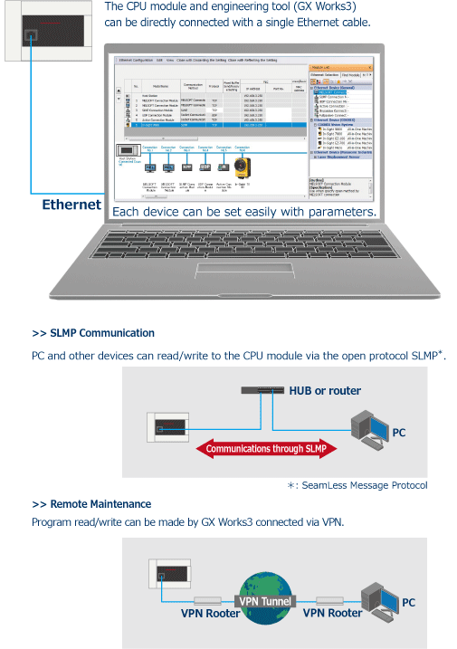

| CPU Performance |
FX5U/FX5UC |
The FX5U/FX5UC CPU modules has a CPU capable of high-speed processing with an instruction operation speed (LD instruction) of 34 ns
*2.
In addition, the CPU now supports execution of structured programs and multiple programs, ST language, FB etc.
- *1Supported by FX5U/FX5UC Ver. 1.100 or later, and serial number 17X**** (serial number 178**** (for FX5UC-32MT/DS-TS and FX5UC-32MT/DSS-TS) or later.)
Some operation restrictions apply when 128 k steps is selected. For details, refer to the manual.
- *2When the program capacity is 64 k steps.
|
| FX5UJ |
The speed of FX5UJ CPU modules has increased to twice that of the FX3U.
They are also able to demonstrate excellent performance when using intelligent function modules with a large amount of communication data.
|
| FX5S |
The FX5S CPU module is standard equipped with a built-in USB (Mini-B) connector and built-in Ethernet port.
This module is compact and condenses the high basic performance, such as the positioning and IoT functions, and ease of use.
This facilitates configuring user systems.
|
| Built-in Ethernet Port |
The Ethernet communication port can handle communication of up to 8 connections on the network, and can support multiple connections with personal computer and other device.
In addition, the Ethernet communication port can handle seamless SLMP communication with the upper-level device.
 |
Built-in RS-485 port
(MODBUS® function)
FX5U/FX5UC |
Connect to serial devices up to 50 m away with built-in RS-485 port. Control for up to 16 Mitsubishi inverters is possible with dedicated six inverter communication instructions.
MODBUS is also supported and can connect up to 32 MODBUS devices such as PLCs, sensors and temperature controllers.
|
Built-in Analog
Input/Output
(with alarm output)
FX5U
|
FX5U is equipped with 12-bit 2 ch analog input and 1 ch analog output.
With parameter setup, no programming is required.
Value shifting, scaling and alarm output can also be set easily with parameters.
Note :Only FX5U Built-in Analog Input/Output.
Example of inverter control
using analog output
|
Built-in USB (Mini-B) connector
FX5UJ/FX5S
|
Another interface for programming, in addition to the Ethernet port.
The standard equipped USB (Mini-B) Connector makes it easier to connect to GX Works3.
|
Built-in SD Memory Card Slot
*1
|
Example of mass-production of equipment using SD memory card
A built-in SD memory card slot is convenient for updating the program and mass production of equipment.
Data can be logged in SD memory card, making it easy to analyze the system status and production state, etc.
- *1FX5S requires FX5-SDCD separately.
|
| Security |
MELSEC iQ-F has advanced security functions (file password, remote password, security key)
to prevent data theft and illegal operations by unauthorized persons.
Example of security key function
|
High-speed System
Bus Communication |
High-speed system bus communication at 1.5 K words/ms (approximately 150 times faster compared with FX3U),
together with high speed CPU, allows MELSEC iQ-F to output maximum performance even when heavy data communication intelligent function modules are used.
|
| RUN/STOP/RESET Switch |
RUN/STOP/RESET switch is built in.
PLC can be rebooted without turning off the main power for efficient debugging. |
Battery-less and
Maintenance-free |
MELSEC iQ-F series holds programs and devices in nonvolatile memory such as flash ROM, and does not require a battery.
- *It is possible to increase the capacity of held devices by using an optional battery.
|